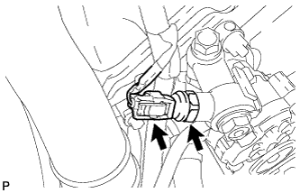
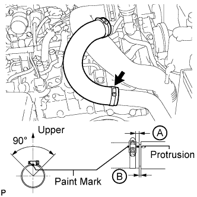
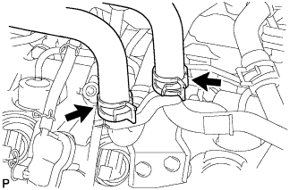

POWER STEERING OIL PRESSURE SWITCH > INSTALLATION |
| 1. INSTALL POWER STEERING OIL PRESSURE SWITCH |
Install a new O-ring to the oil pressure switch.
Apply a light coat of engine oil to the O-ring of the oil pressure switch.
 |
Using a 19 mm deep socket wrench, install the oil pressure switch.
Connect the oil pressure switch connector.
| 2. INSTALL RADIATOR RESERVOIR ASSEMBLY |
 |
Install the radiator reservoir with the 3 bolts.
Connect the 2 hoses to the upper radiator tank and water inlet.
| 3. INSTALL NO. 1 OIL RESERVOIR BRACKET |
 |
Install a new bracket with the 2 bolts.
| 4. INSTALL VANE PUMP OIL RESERVOIR ASSEMBLY |
 |
Install the vane pump oil reservoir to the bracket.
| 5. INSTALL NO. 1 AIR CLEANER PIPE SUB-ASSEMBLY |
 |
Connect the No. 1 air cleaner pipe to the No. 1 intake air connector pipe.
Install the pipe with the bolt.
Tighten the hose clamp.
| 6. INSTALL HEATER WATER PIPE SUB-ASSEMBLY (w/ Viscous Heater) |
 |
Connect the 4 water hose ends, and install the water pipe with the 4 bolts.
| 7. INSTALL NO. 3 AIR TUBE |
 |
Install the No. 3 air tube with the bolt.
Tighten the hose clamp.
 |
Install the wire harness bracket with the bolt.
 |
Install the ground wire with the nut, and attach the wire harness clamp.
| 8. INSTALL NO. 1 AIR HOSE |
 |
Connect the No. 1 air hose with the hose clamp.
| 9. INSTALL INTAKE AIR CONNECTOR |
 |
Connect the intake air connector to the No. 1 and No. 2 air cleaner pipes.
Install the connector with the 2 bolts.
Tighten the 2 hose clamps.
 |
Attach the 3 wire harness clamps.
w/o Viscous Heater:
Connect the connector to the water temperature sensor.
w/ Viscous Heater:
Connect the 2 connectors to the water temperature sensor and viscous with magnet clutch heater.
| 10. TEMPORARILY INSTALL NO. 1 AIR CLEANER HOSE |
 |
Temporarily install the air cleaner hose to the intake air connector.
| 11. INSTALL AIR CLEANER CAP SUB-ASSEMBLY |
 |
Connect the air cleaner cap to the air cleaner hose, and install the air cleaner cap with the 4 clamps.
Connect the mass air flow meter connector and attach the wire harness clamp to the air cleaner cap.
Attach the wire harness clamp.
 |
Align the protrusion of air cleaner cap and concave portion of air cleaner hose.
Tighten the 2 hose clamps.
| 12. CONNECT WATER HOSE SUB-ASSEMBLY (w/ Viscous Heater) |
 |
Connect the 2 water hoses.
| 13. INSTALL INTERCOOLER ASSEMBLY |
Install the intercooler assembly (Click here).
| 14. INSTALL V-RIBBED BELT |
 |
Attach a wrench to the V-ribbed belt tensioner bracket and turn the wrench clockwise.
 |
Install the V-ribbed belt as shown in the illustration.
 |
Check that the belt fits properly in the ribbed grooves.
| 15. INSTALL NO. 3 IDLER PULLEY (w/ Viscous Heater) |
 |
Align the No. 3 idler pulley bracket knock pin and No. 1 idler pulley bracket knock pin hole and install the No. 3 idler pulley with the nut.
| 16. INSTALL NO. 1 IDLER PULLEY (w/ Viscous Heater) |
 |
Install the collar, No. 1 idler pulley and cover with the bolt.
| 17. INSTALL V-RIBBED BELT (w/ Viscous Heater) |
 |
Install the V-ribbed belt as shown in the illustration.
 |
Temporarily install the lock nut, and turn the bolt clockwise.
 |
Using a belt tension gauge, adjust belt tension.
| Item | Specified Condition |
| New belt | 400 to 650 N (41 to 66 kgf, 89.9 to 146.1 lbf) |
| Used belt | 300 to 500 N (31 to 51 kgf, 67.4 to 112.4 lbf) |
 |
Tighten the nut.
|
Check that the belt fits properly in the ribbed grooves.
| 18. ADD ENGINE COOLANT |
 |
Remove the engine air bleed cap.
 |
Connect a clear hose to the engine air bleed pipe.
 |
Using a wrench, remove the vent plug.
 |
Fill the radiator with TOYOTA SLLC to the radiator reservoir filler neck.
| Item | Specified Condition |
| Front heater only | 14.8 liters (15.6 US qts, 13.0 Imp. qts) |
| Front heater and rear heater | 17.6 liters (18.6 US qts, 15.5 Imp. qts) |
| Front heater with viscous heater | 15.2 liters (16.1 US qts, 13.4 Imp. qts) |
| Front heater and rear heater with viscous heater | 18.0 liters (19.0 US qts, 15.4 Imp. qts) |
|
Install the vent plug.
|
Disconnect the clear hose from the engine air bleed pipe.
|
Install the engine air bleed cap when coolant comes out.
Install the radiator reservoir cap.
Start the engine.
Maintain an engine speed of 3000 rpm for approximately 10 minutes so that the thermostat opens and air bleeding is performed.
Stop the engine, and wait until the engine coolant cools down to ambient temperature.
 |
Check that the coolant level is between the FULL and LOW lines.
If the coolant level is above the FULL line, drain coolant so that the coolant level is between the FULL and LOW lines.
| 19. INSPECT FOR COOLANT LEAK |
 |
Fill the radiator with coolant and attach a radiator cap tester to the radiator reservoir.
Warm up the engine.
Using the radiator cap tester, increase the pressure inside the radiator to 123 kPa (1.3 kgf/cm2, 17.8 psi), and check that the pressure does not drop.
If the pressure drops, check the hoses, radiator and water pump for leaks.
If no external leaks are found, check the cylinder block and cylinder head.
| 20. INSTALL NO. 1 ENGINE UNDER COVER SUB-ASSEMBLY |
 |
Install the engine under cover with the 10 bolts.
| 21. INSTALL FRONT FENDER SPLASH SHIELD SUB-ASSEMBLY RH |
 |
Install the splash shield with the clip, and then install the 3 bolts and screw.
| 22. INSTALL FRONT FENDER SPLASH SHIELD SUB-ASSEMBLY LH |
Install the splash shield with the clip, and then install the 3 bolts and screw.